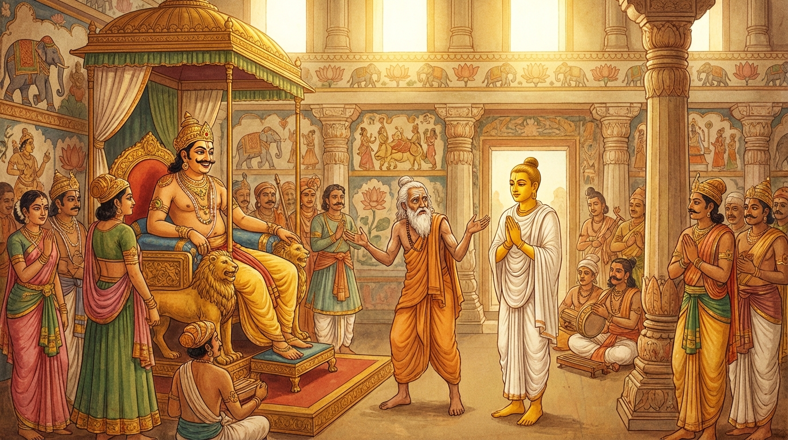

1. සෝමදත්ත ජාතකය (211)
අකාසි යොග්ගං යනාදී වශයෙන් එන මේ ධර්ම දේශනාව ශාස්තෘන් වහන්සේ ජේතවනාරාමයෙහි වැඩ වාසය කරන සමයෙහි ලාළුදායි තෙරුන් වහන්සේ අරබයා වදාළ සේක. ඒ තෙරුන් වහන්සේ වනාහි මිනිසුන් දෙතුන් දෙනෙකු අතරෙහි එක වචනයක් හෝ ගළපා කියාගැනීමට නොහැකි වෙයි. සභා බිය (සාරජ්ජ) බහුල බැවින් “වෙන දෙයක් කියමි” යි සිතා වෙනත් දෙයක්ම පවසයි. භික්ෂූන් වහන්සේලා දම්සභාවේදී උන්වහන්සේගේ ඒ ප්රවෘත්තිය කතා කරමින් සිටියහ. ශාස්තෘන් වහන්සේ එහි වැඩමවා, “මහණෙනි, දැන් කවර කථාවකින් යුක්තව හුන්නාහුදැ” යි විචාරා, “මේ නම් කථාවෙනැ” යි කී කල්හි, “මහණෙනි, ලාළුදායි තෙම දැන් පමණක් නොව පෙරත් ලැජ්ජාබිය බහුල වූයේමයැ” යි වදාරා අතීත කථාව ගෙනහැර දැක්වූ සේක.
අතීතයෙහි බරණැස් නුවර බ්රහ්මදත්ත රජු රාජ්ය කරන කල්හි බෝධිසත්වයෝ කාසි රට එක්තරා බ්රාහ්මණ කුලයක උපත ලබා, වියපත් වූ පසු තක්සලාවෙන් ශිල්ප හදාරා නැවත නිවසට පැමිණියහ. මව්පියන්ගේ දිළිඳු බව දැන, “පිරිහී ගිය කුලය සිටු තනතුරෙහි පිහිටුවන්නෙමි” යි මව්පියන්ගෙන් අවසර ගෙන බරණැසට ගොස් රජුට උපස්ථාන කළහ. ඔහු රජතුමාට ප්රියමනාප විය. ඉක්බිති මොහුගේ පියා ගොනුන් දෙදෙනෙකුගෙන් කෘෂිකාර්මික කටයුතු කරමින් ජීවත් වෙයි. ඔහුගේ එක් ගොනෙක් මළේය. ඔහු බෝධිසත්වයන් වෙත ගොස්, “පුත, එක් ගොනෙක් මළේය, ගොවිතැන් වැඩ කරගත නොහැකිය, රජතුමාගෙන් එක් ගොනෙකු ඉල්ලා දෙන්නැ” යි කීවේය. “පියාණෙනි, මා විසින් රජතුමා හඳුනා ගනු ලැබුවේ මෑතකදී ය. දැන්මම ගොනුන් ඉල්ලීම නුසුදුසු ය, ඔබම ඉල්ලන්නැ” යි කීහ. “පුත, නුඹ මගේ සභා බිය (සාරජ්ජ) බහුල බව නොදන්නෙහිද? මම වනාහි දෙතුන් දෙනෙකු ඉදිරියේ කථාවක් ගළපා ගැනීමට නොහැක්කෙමි. ඉදින් මම රජු වෙත ගොනෙකු ඉල්ලන්නට යන්නේ නම් මේ සිටින ගොනාත් දී එන්නෙමි” යි කීවේය. “පියාණෙනි, යමක් වේ නම් එය වොවේවා, මා විසින් රජතුමාගෙන් ඉල්ලීම කළ නොහැක්කකි. එසේ වුවත් මම ඔබව ඊට පුහුණු කරවන්නෙමි” යි කීහ. “එසේ නම් යහපත, මා පුහුණු කරවන්නැ” යි පියා කීවේය.
බෝධිසත්වයෝ පියා කැඳවාගෙන ‘බීරණත්ථම්භක’ නම් සොහොනට ගොස්, එහි තැනින් තැන තණමිටි බැඳ, “මේ රජතුමා ය, මේ යුව රජතුමා ය, මේ සේනාපතිවරයා ය” යි නම් කොට පිළිවෙළින් පියාට පෙන්වා, “පියාණෙනි, ඔබ රජු සමීපයට ගොස් ‘මහරජතුමනි, ඔබට ජය වේවා!’ යි මෙසේ කියා මේ ගාථාව පවසා ගොනෙකු ඉල්ලන්නැ” යි කියා ගාථාව ඉගැන්වූහ.
“මහරජතුමනි, මට ගොනුන් දෙදෙනෙක් වූහ. යම් උන්ගෙන් අපි කෙත සාමු ද (සී සාමු ද), දේවයන් වහන්ස, ඔවුන් අතුරෙන් එක් ගොනෙක් මළේය. ක්ෂත්රියයන් වහන්ස, (මට) දෙවැනි ගොනෙකු දුන මැනවි.”
යනුවෙන් ඒ ගාථාව පුහුණු කරවූහ.
බ්රාහ්මණයා අවුරුද්දක් මුළුල්ලෙහි ඒ ගාථාව පුහුණු කොට බෝධිසත්වයන්ට කතා කොට, “දරුව සෝමදත්ත, මට ගාථාව හොඳින් පාඩම් ය. දැන් මම යම්කිසිවෙකු ඉදිරියේ වුවද කතා කිරීමට සමත්තෙමි. මා රජතුමා හමුවට කැඳවාගෙන යන්නැ” යි කීවේය. ඔහු “යහපති පියාණෙනි” යි කියා සුදුසු පඬුරු ගන්වාගෙන පියා රජු වෙත කැඳවාගෙන ගියේය. බ්රාහ්මණයා “මහරජතුමනි, ජය වේවා!” යි කියා පඬුරු පිළිගැන්වීය. රජතුමා, “සෝමදත්ත, මේ බ්රාහ්මණයා ඔබගේ කවරෙක් ද?” යි ඇසීය. “මහරජතුමනි, මාගේ පියාණෝ ය” යි කීහ. “කුමක් සඳහා පැමිණියේ දැ?” යි විමසූ කල්හි, ඒ අවස්ථාවේ බ්රාහ්මණයා ගොනා ඉල්ලීම පිණිස ගාථාව කියන්නේ;

“මහරජතුමනි, මට ගොනුන් දෙදෙනෙක් වූහ. යම් උන්ගෙන් අපි කෙත සාමු ද (සී සාමු ද), දේවයන් වහන්ස, ඔවුන් අතුරෙන් එක් ගොනෙක් මළේය. ක්ෂත්රියයන් වහන්ස, (ඉතිරි) දෙවැනි ගොනා ද ගත මැනවි.” යැයි පැවසීය.
රජතුමා බ්රාහ්මණයා විසින් වරදවා කියන ලද බව දැන, සිනාසී, “සෝමදත්ත, ඔබගේ නිවසේ බොහෝ ගොනුන් ඇතැයි සිතමි” යි කීවේය. “මහරජතුමනි, ඔබවහන්සේ විසින් දෙන ලද්දාහු වන්නාහ” යි බෝධිසත්වයෝ කීහ. රජතුමා බෝධිසත්වයන් කෙරෙහි පැහැදී බ්රාහ්මණයාට ගොනුන් දහසයක් ද, අලංකාර භාණ්ඩ ද, බ්රහ්මදෙය්ය කොට (බදු රහිතව) වාසයට ගමක් ද දී මහත් යසසින් යුතුව බ්රාහ්මණයා පිටත් කර හැරියේය. බ්රාහ්මණයා සියලු සුදු අශ්වයන් යෙදූ රථයකට නැගී මහත් පිරිවර සහිතව ගමට ගියේය. බෝධිසත්වයෝ පියා සමඟ රථයෙහි වාඩි වී යන්නාහු, “පියාණෙනි, මම මුළු අවුරුද්දක්ම ඔබව පුහුණු කළෙමි. එහෙත් කටයුත්ත එළඹි කල්හි ඔබ (ඉතිරි) ගොනාත් රජතුමාට දී දැමුවෙහිය” යි පවසා පළමු වන ගාථාව වදාළහ:
“බීරණත්ථම්භක නම් සොහොනෙහි දී නිරතුරුව අප්රමාද ව අවුරුද්දක් පුහුණුව කළේය. (එහෙත්) පිරිස අතරට වැද ඒ සංඥාව (පාඩම) විකෘති කළේය. නුවණ මඳ තැනැත්තා හට පුහුණුව පිහිට නොවේ.”
යනු මේ පළමු ගාථාව කීහ.
එහි අකාසි යොග්ගං ධුවමප්පමත්තො සංවච්ඡරං බීරණථම්භකස්මිං යනු, පියාණෙනි, ඔබ නිරන්තරයෙන් අප්රමාද වී බීරණත්ථම්භක නම් සොහොනෙහි දී පුහුණුවීම් කළෙහිය. බ්යාකාසි සඤ්ඤං පරිසං විගය්හ යනු, එසේ වුවත් පිරිස මැදට වැද ඒ හැඳින්වීම (පාඩම) විකෘති කළෙහිය; වෙනස් කළෙහිය; කණපිට පෙරළුවෙහිය යන අර්ථයි. න නිය්යමො තායති අප්පපඤ්ඤං යනු, නුවණ මඳ පුද්ගලයා පුහුණු කරන ලද ව්රතය හෝ උත්සාහය විසින් ආරක්ෂා නොකරයි; නොරකියි.
ඉක්බිති ඔහුගේ වචනය අසා බ්රාහ්මණයා දෙවන ගාථාව කීවේය:
“දරුව සෝමදත්තය, යමක් ඉල්ලන්නාට අලාභය හෝ ධන ලාභය හෝ යන දෙක ම සිදුවෙයි. යාච්ඤාව (ඉල්ලීම) නම් මෙබඳු ස්වභාව ඇත්තේ ය.”
යනුවෙන් දෙවන ගාථාව ද කීවේය.
එහි එවංධම්මා හි යාචනා යනු, ඉල්ලීමේ ස්වභාවය එවැනි ය (ලාභ හෝ අලාභ සිදුවීම එහි ස්වභාවය යි).
ශාස්තෘන් වහන්සේ, “මහණෙනි, ලාළුදායි තෙම ලැජ්ජාබිය බහුල වූයේ දැන් පමණක් නොවේ, පෙරත් ලැජ්ජාබිය බහුලව ම සිටියේ ය” යි වදාරා, මේ ධර්ම දේශනාව ගෙනහැර දක්වා ජාතකය පූර්වාපර සන්ධි ගළපා වදාළ සේක. “එකල රජතුමා නම් ආනන්ද තෙරුන් ය. සෝමදත්තගේ පියා ලාළුදායි විය. සෝමදත්ත වනාහි මම ම වූවෙමි.”
පළමුවන සෝමදත්ත ජාතක වර්ණනාව යි.